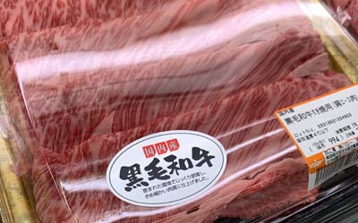
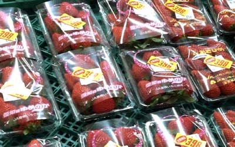
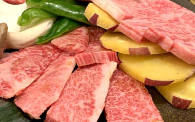

光觸媒清淨機(設計、合作)步驟：
1. 依客戶所需(討論用途、目標價)；使用環境條件，其抗菌或抗污、除臭....等不同功能是否可行。
2. 依被加工材料或元件，選用最佳之光觸媒原料及最佳節省原料之加工法。
3. 產品或模組使用光學設計，使其充份發揮其效果。
4. 其它(專利、安規、效能驗證...等)。
世屋光觸媒加工自2002年從日本引進台灣，已具有近20多年之加工技術與經驗，並榮獲政府研發補助及英國發明大賞。

食物保鮮主要方法是在於如何抑制細菌或有促於腐敗氣体產生或防止氧化：冷凍、真空、輻射、乾燥、添加人工或化學防腐材料...等方法，而利用光觸媒原理剛好可以在此發揮其抑菌及腐敗氣體產生，目前已有多項商品已應用開發，如電冰箱、食物輸送車、植物花卉工廠...等等。
以保存蔬果和穀物此類食物時，除了細菌會造成腐敗外，另外也會放出促進果物和青菜成熟的老化促進氣體，即(乙稀)Athylen gas，其氣體會造成老化促進，加速食物起之腐敗，一般而言用低溫保存以抑制果物和青菜的活動，則可抑制老化促進氣體的發生，此方法消滅老化促進氣體而效果並不大，主要是抑制細菌的活動量，但使用光觸媒可將Athylen gas分解為二氧化碳和水而使果物和穀物等的鮮度持久，以提高在市場上的商品價值，尤其在運輸過程中，可開發之應用將會越來越廣泛。

目前已有用在高單價之農產品上，例如利用於草莓的鮮度保持而製的使用光觸媒的(pack）和使用於食品倉庫內用來長期保持存果物和穀物鮮度保持裝置運用(如圖下方草莓使用光觸媒保鮮袋保存，下方草莓使用一般保鮮袋)，又有使用於輸送農產物的保冷貨車為例，而使光觸媒不僅分解同時可防止冷藏車庫內的細菌和霉的繁殖，同時施行脫臭，又可使於種苗和球根菜的保存及防止菠蔆菜或蔥的變黃，目前已有許多家冰箱製造業者已用此技術在其商品上。
商品設計上應注意事項：
(A)產品設計應該著重設計於密封空間，效果才更會優，原因在於除了可避免與外在之細菌接觸，在光催化反應時，細菌及腐話氣體會分解成二氧化碳和純水，被食物吸收時，會產生真空之效果，更利於食物保鮮。
(B)光源設計上應注意使用低熱之光源，光學部份設計以直射為主。
(C)光觸媒材料使用具吸附之複合材料為佳。

(光觸媒植物工廠)另外在葉菜類中，因氮肥使用，如生長採收期之陽光照射下越少，其硝酸鹽殘留在蔬菜上越高，又因採收後因細菌等影響變成亞硝酸鹽，其量甚至比香腸高出數十至百倍，吃入體內就成了亞硝酸胺(致癌物)目前已有光動力觸媒溫室可解決此問題，圖右為植物工廠，如有此知識需求可與本公司連絡。
1. 依客戶所需(討論用途、目標價)；使用環境條件，其抗菌或抗污、除臭....等不同功能是否可行。
2. 依被加工材料或元件，選用最佳之光觸媒原料及最佳節省原料之加工法。
3. 產品或模組使用光學設計，使其充份發揮其效果。
4. 其它(專利、安規、效能驗證...等)。
世屋光觸媒加工自2002年從日本引進台灣，已具有近20多年之加工技術與經驗，並榮獲政府研發補助及英國發明大賞。